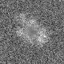
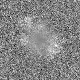
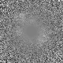
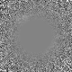
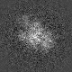
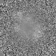

最小
最大
平均値
標準偏差
標準誤差
-65.0178
94.4699
4.85274
20.4635
0.255794
| オプション | 必須項目/選択項目 | NULL | デフォルト |
|---|---|---|---|
| -i | 必須 | 入力ファイル設定 | NULL |
| -o | 必須 | 出力ファイル設定 | NULL |
| -rmin | 選択 | 半径の最小値を設定 | 0 |
| -rmax | 選択 | 半径の最大値を設定 | 90 |
| -ratio | 選択 | 比率の設定 | 0 |
| -M | 選択 | モード | 0 |
| -h | 選択 | ヘルプを表示 |
| モード | 説明 |
|---|---|
| 0 | 密度をr=0からr=rminに変える また、rminからrmaxまで徐々に密度をつないでいく |
| 1 | rmaxより、rminからrmaxまで徐々に密度をつないでいく |
|
最小 |
-65.0178 |
最小 |
-46.3548 |
|  | 最小 |
-65.0178 |
|  | 最小 |
-65.0178 |
|  | 最小 |
-41.1337 |
|  | 最小 |
-39.4606 |
最小 |
-179.995 |
|  | 最小 |
-330.137 |
最小 |
-46.3548 |
|  | 最小 |
-46.3548 |